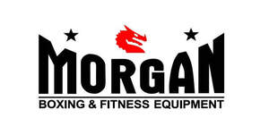

Trade Mark Journal No.2025/043 24 October 2025
UK00004266708 19 September 2025 (25,28)

- Class 25
- Boxing shorts; Boxing shoes; Boxer shorts; Boxer briefs; Sports clothing [other than golf gloves]; Judo uniforms; Sports singlets; Karate uniforms; Judo suits; Clothing for wear in wrestling games; Sport shoes; Footwear for sport; Footwear for use in sport; Sport shirts; Mountaineering gloves; Cycling Gloves; Gym shorts; Martial arts uniforms; Boots for sport; Combative sports uniforms; American football shorts; Clothes for sport; Taekwondo uniforms; Rugby shorts; Clothing for martial arts; Sport stockings; Sports pants; Karate suits; Sports socks.
- Class 28
- Boxing gloves; Gloves (Boxing -); Boxing rings; Punching balls for boxing; Punching bags for boxing; Punching balls [for boxing practice]; Karate gloves; Sparring gloves; Taekwondo mitts; Gloves for sports; Football gloves; Gloves for American football; Toy wrestling rings; Handball gloves; Belts for weightlifting; Apparatus for use in training for the game of rugby [sporting equipment]; Leg weights for sports training; Baseball gloves; Gloves (Baseball -); Protectors for elbows for use when participating in the sport of cricket; Sport balls; Hockey gloves; Chest protectors adapted for playing the sport of taekwondo; Martial arts training equipment; Gym balls for yoga; Kick pads for martial arts; Rings for sports; Sports training apparatus; Sport hoops; Balls for racket sports; Gloves (Fencing -); Fencing gloves; Baseball batting cage nets; Karate kick pads; Golfing gloves; Protective face masks for use in the sport of fencing; Clubs for gymnastics; Balls for sports; Sports balls; Guts for rackets [for tennis or badminton]; Taekwondo kick pads; Supporters (Men's athletic -) [sports articles]; Men's athletic supporters [sports articles]; Tennis uprights [sports equipment]; Bowling gloves; Gymnastic and sporting articles; Ring games; Rugby footballs; Billiard gloves; Gym balls; Golf gloves; Gloves (Golf -); Gloves for golf; Windsurfing gloves; Baseball mitts; Cages for mixed martial arts; Belts (Weight lifting -) [sports articles]; Weight lifting belts [sports articles]; Badminton rackets; Swimming gloves; Fist guards [sporting articles]; Leg weights [sports articles]; Rings for gymnastics; Gymnastics rings; Protectors for elbows for use when skateboarding [sports articles]; Springboards for sports; Balls for playing sports; Rugby balls; Nets for sports.
MORGAN SPORTS LTD